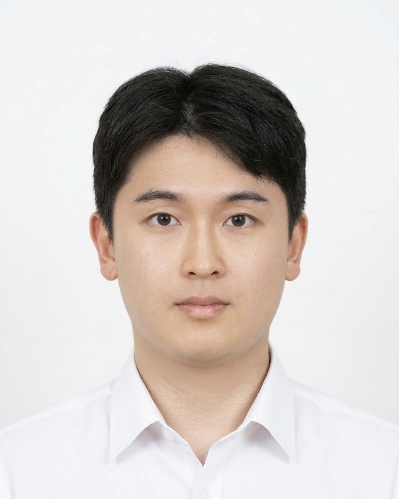

자기소개서
이동혁 | 개발PM 지원자
- 하이퍼스타㈜ 인턴 (2025.12~2026.02) — 문서 체계화, 외주 협업
- 업스테이지&강원대 n8n 해커톤 팀장 (2025.11)
- PMP 교육 수료 (2026.03~04, CasePM)
- AI Fluency 교육 수료 (2026.03, Anthropic)
개발PM은 제한된 일정과 리스크 속에서 우선순위를 설정해 프로젝트를 완성하는 역할이라 생각합니다. 업스테이지 주최 AI 워크플로우 해커톤에서 4인 팀장으로 5일 이내에 회의 자동화 파이프라인을 완성했습니다.
① 프로토타입 시연으로 동기부여: 초기 팀원 참여도가 저조해 개별 미팅으로 원인을 파악해보니, 처음 사용하는 도구라 과제가 막막하게 느껴진다는 것이었습니다. 최소 기능의 프로토타입을 직접 제작해 시연함으로써 가능성을 확인시켜 팀 전체의 참여도를 끌어올렸습니다.
② 우선순위 기반 스펙 조정: AI 에이전트 노드 간 데이터 전달 버그로 하루를 소모했을 때, 완성도보다 완성 자체를 우선해야 한다고 판단했습니다. 팀원을 설득하고 직렬 구조로 변경하는 대안을 제시했으며, 이후 매일 2회 짧은 미팅으로 목표와 우선순위를 공유했습니다.
결과적으로 기한 내 핵심 기능이 동작하는 결과물을 제출하여 프로덕트 면에서 긍정적인 평가를 받았습니다. 게임 개발 현장에서도 불확실성을 초기에 식별하고 우선순위 기반으로 프로젝트를 완수하겠습니다.
AI 스타트업 인턴 당시 내부 문서 체계가 전무한 상황에서 정부 지원 사업 비용 처리를 위한 외주사 협업을 담당했습니다. 품의서, 검수 조사서, 출장 계획서 등 필수 서류의 내부 양식조차 없어 협업이 어려운 상황이었습니다.
① 표준 양식 직접 제작: 외주 업체에 먼저 연락해 서류 양식 가이드라인을 받아 회사 상황에 맞게 표준 양식을 직접 제작하고, 흩어진 기존 데이터를 취합해 이후 담당자도 활용할 수 있는 문서 기반을 구축했습니다.
② 실시간 소통 채널 운영: Slack 채널을 통해 외주사와 실무 소통을 전담하고, 서류 형태가 불명확하면 직접 전화로 확인하며 처리 흐름이 끊기지 않도록 관리했습니다.
결과적으로 지연되던 3개월치 비용 처리를 완료했고, 제가 구축한 문서 체계는 사내 레퍼런스로 활용되었습니다.
고등학생 시절 리그오브레전드와 오버워치를 자주 했습니다. 플레이뿐만 아니라 세계관 스토리가 담긴 영상 콘텐츠를 유튜브로 찾아보는 것을 정말 좋아했습니다. 한 편의 영화를 보는 기분이 들었고, 플레이 중 이스터에그나 특수 대사가 등장했을 때 게임에 훨씬 몰입할 수 있었습니다. 게임은 단순한 소비용 콘텐츠를 넘어 플레이어의 경험과 감정을 담아 설계하는 콘텐츠라는 것을 깨닫고, 저도 만들고 싶다는 꿈을 갖게 되었습니다.
이후 2025 서울 인디게임&컬처 비버락스 페스티벌에 참여해 물류센터 시뮬레이션 게임을 플레이했습니다. 물류 아르바이트 경험이 있던 저에게 포장을 끝낸 상자를 레일에 올리는 순간, 마감 직전 동료들이 서로를 독려하던 장면은 단순 재현이 아닌 강한 몰입감을 주었습니다. 나의 경험이 누군가에게 게임이 될 수도 있다는 것을 깨달으며, 많은 유저에게 경험과 감정을 공유할 수 있는 게임을 만들고자 게임 업계에 지원하게 되었습니다.
컴퓨터공학을 전공하며 모듈 단위의 기능 구현보다 시스템 전체가 어떻게 설계되고 연결되는지에 더 큰 흥미를 느꼈습니다. 기획이 뼈대를 세우고, 개발이 근육을 붙이며, 아트가 살을 입힌다면 개발PM은 그 사이를 유기적으로 연결하는 혈관과도 같다고 생각합니다.
캡스톤 디자인에서 기능 구현에만 몰두한 나머지 UX/UI 관점을 놓쳐 불편하다는 평가를 받은 경험이 있습니다. 이 경험을 통해 개발자의 기술, 기획자의 분석, 디자이너의 감각을 모아야만 완성도 높은 서비스가 나온다는 것을 느꼈습니다. 이후 AI 워크플로우 해커톤에서 팀장을 맡아 프로토타입 시연으로 팀 동기부여를 이끌고 스펙을 조율하며 완성도 높은 결과물을 낸 경험을 통해 개발PM이 되고 싶다는 뚜렷한 목표를 갖게 되었습니다.
저의 장점은 비효율적 업무 구조를 개선하는 체계화입니다. 450석 규모의 대형 PC방에서 약 2년간 근무할 당시, 단 7명의 직원이 교대로 400명의 손님을 감당하는 환경에서 신입 이탈이 반복되었습니다. 원인을 분석한 결과, 명확한 교육 담당자 없이 여러 직원이 돌아가며 교육하는 구조와 기준 없이 업무를 익혀야 하는 신입의 부담이 크다는 것을 파악했습니다. 매니저분께 문제를 공유하고 2가지 해결책을 제안해 실행했습니다.
① 업무 표준화: 구두로 전달되던 지침을 음식 제조, 오픈·마감, 고객 응대 카테고리로 나눠 2장 분량의 문서로 표준화하고, 누락이 발생하지 않도록 체크리스트를 제작해 누구나 일정 수준 이상으로 수행할 수 있는 기준을 만들었습니다.
② 신입 교육 전담: 교육 도중 직원의 강점을 파악해 초기에는 해당 업무에 고정 배치하여 빠른 적응을 유도했습니다. 소통 능력이 뛰어난 직원은 카운터에 먼저 배치하는 방식으로 적응도를 높였습니다.
그 결과 이탈률을 75%에서 20%로 낮추었고, 보너스와 함께 타 지점 오픈 초기 멤버로 스카우트 제의를 받았습니다. 부족한 자원일수록 프로세스 효율화가 필요하다는 것을 이 경험을 통해 깨달았습니다.
단점은 한 번 신경 쓰인 것을 쉽게 놓지 못한다는 점입니다. 상대방과 대화를 나눌 때 감정 상태를 유추하거나, 과거의 소통 방식이 적절했는지 고민하다 보니 불필요한 에너지를 소모하고 스트레스가 누적되었습니다. 세심함이 소통에는 도움이 되지만, 지나치면 스스로 많은 에너지를 소모하게 된다는 문제가 있었습니다.
이를 극복하기 위해 4년 전부터 일기를 쓰는 습관을 만들었습니다. 머릿속 생각을 글로 써 내려가면 맴돌던 생각이 정리되고 필요한 것이 무엇인지 명확해졌습니다. 또한 등산을 통해 생각을 환기하며 스트레스를 관리하고 있습니다. 다양한 직군과 소통하는 환경에서 이 성향을 활용해 팀 상황을 빠르게 파악하고 성과를 내는 데 기여하겠습니다.
개발PM은 WBS, 릴리즈 노트 등 기술 문서를 읽고 작성하며 비즈니스 목표와 기술을 연결하는 직무입니다. 인턴 시절 대표님과의 미팅에서 사업 방향성을 듣고 사업계획서 작성에 직접 참여했습니다. 이 과정에서 API 문서를 읽고 서비스의 기술 구조를 파악해 어떻게 구현되어 있는지 개발팀과 직접 소통하며 비즈니스 목표를 기술로 연결하는 과정을 경험했습니다.
또한 외주 파트너사와의 소통을 전담하며 문서 기준을 통일하고 협업 환경을 경험하면서 실무 협업 방식을 익혔습니다. 나아가 자사 플랫폼 QA를 통해 버그와 UI/UX 이슈를 직접 발견하고 Slack을 활용해 개발팀에 전달하며 서비스 구조를 파악했습니다. 이러한 경험을 통해 개발팀과 소통하며 프로덕트 완성을 이끄는 것이 핵심임을 체감했습니다.
게임 구조를 더 깊이 이해하기 위해 Unity 기반 뱀파이어 서바이벌 장르의 게임을 사이드 프로젝트로 개발하고 있습니다. Notion으로 개인 일정을 관리하고, JIRA의 칸반보드·스크럼보드·대시보드를 통해 스프린트별 일감 시각화와 인원별 업무 할당량 조정 방법을 학습하며 Git 브랜치 전략으로 협업 툴 역량을 이어가고 있습니다.
디나미스원은 서브컬처 RPG로 글로벌 시장에 도전하는 회사입니다. 기준이 없는 환경에서 문서 체계와 협업 구조를 만든 경험을 바탕으로, 팀이 본질적인 작업에 집중할 수 있는 구조를 만드는 개발PM이 되겠습니다.
게임을 즐기는 것과 구조적으로 이해하는 것은 다르다고 생각합니다. 개발PM으로서 콘텐츠 순환, BM, UX를 분석하는 시각을 갖추기 위해 쿠키런: 킹덤을 대상으로 게임 분석 보고서를 직접 작성했습니다.
UI 구조, 플레이 루프, BM 구조를 레이어별로 분해했습니다. 쿠키 성장과 왕국 성장이 서로를 촉진하는 이중 순환 구조, 수집 욕구와 희소성을 활용해 현금 사용을 유도하는 BM 설계 방식을 파악했습니다. 매출 순위 변화 데이터를 분석하며 버그, 운영 이슈, BM 논란이 리텐션에 직접적인 영향을 미친다는 것도 확인했습니다.
단순 분석에서 그치지 않고 광산 콘텐츠 UI/UX 불편함을 유저 커뮤니티 반응과 성비 데이터로 근거를 잡아 문제로 정의했습니다. 개선 방향을 제안한 뒤 기획 1주 → 개발 4주 → 프리테스트 1주 → 디버깅 2주 → 릴리즈 2주 일정으로 WBS와 간트차트를 직접 작성했습니다. 엣지 케이스 시나리오와 분기 처리 방안도 함께 정의했습니다.
이 경험을 통해 게임을 유저가 아닌 개발PM의 시각으로 바라보는 훈련을 했습니다. 개발 과정에서도 콘텐츠 구조와 유저 경험을 연결하는 시각으로 기여하겠습니다.
PM이 반복 업무에 소요하는 시간을 줄일수록 소통과 리스크 관리에 더 집중할 수 있다고 생각합니다. 업스테이지 AI 워크플로우 해커톤에서 n8n을 활용해 회의 음성을 텍스트로 변환하고, AI가 핵심 내용과 마감 날짜를 요약한 뒤 캘린더 등록과 메일 발송까지 자동화하는 파이프라인을 구현했습니다.
설계 핵심: 각 기능 호출까지 AI에 위임하는 구조로 실행했을 때 호출 오류가 발생했습니다. 이를 해결하기 위해 핵심 흐름은 직렬 구조로 설계하고, AI의 역할을 회의 요약과 날짜 기준 중요도 분류로 한정했습니다. 프롬프트를 통해 JSON 형태의 정형 데이터로 출력을 고정했습니다.
한계와 개선: 음성에 기한이 명시되지 않으면 중요도 정렬이 불가하다는 한계가 남았습니다. 이후 사용자에게 기한을 직접 입력받아 반영하는 구조가 더 적합했을 것이라 깨달았습니다. 자동화 설계의 핵심은 AI에게 위임할 범위와 결과물의 형태를 명확히 정의하는 것임을 배웠습니다.
현재는 AI를 활용해 매주 게임 업계 관련 기사를 취합하여 리포트를 생성하고 Slack으로 공유하는 파이프라인을 이용해 업계 인사이트를 얻고 있습니다. 이 과정에서 Atlassian Rovo의 병목 예측·스프린트 리스크 탐지 기능과 Git-Jira 연동을 통한 자동화 구조도 파악할 수 있었습니다. 경험한 자동화 설계를 실무에 적용해 팀의 효율을 높이겠습니다.